Tema CS5: Programación
(Soluciones de ejercicios propuestos)
1 Ejercicio 1
Ejercicio 1.1. Definir la función tangente tal que tangente(f,a) es la ecuación
de la tangente a la función f en el punto de abscisa a. Por ejemplo,
(%i1) (f(x):=x^3, tangente(f,2));
(%o1) y=12*(x-2)+8
(%i1)
tangente(f,a) := block ([m],
m : at(diff(f(x),x),x=a),
y = ratsimp(f(a)+m*(x-a)))$
(%i2)
(f(x):=x^3, tangente(f,2));
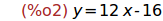
Ejercicio 1.2. Calcular la tangente a f(x)=ln(tan(|x|) en el punto de abscisa
-pi/12.
(%i3)
(f(x)=ln(tan(abs(x))), tangente(f,-%pi/12));
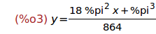
2 Ejercicio 2
Ejercicio 2.1. Definir el procedimiento signosTrinomio tal que
signosTrinomio(a,b,c) es la tabla de la variación de los signos del trinomio
ax^2+bx+c. Por ejemplo,
(%i1) signosTrinomio(1,-2,1);
(%o1) [[[-inf,1],+],[1,0],[[1,inf],+]]
(%i2) signosTrinomio(-1,2,-1);
(%o2) [[[-inf,1],-],[1,0],[[1,inf],-]]
(%i3) signosTrinomio(1,-3,2);
(%o3) [[[-inf,1],+],[1,0],[[1,2],-],[2,0],[[2,inf],+]]
(%i4) signosTrinomio(-1,3,-2);
(%o4) [[[-inf,2],-],[2,0],[[2,1],+],[1,0],[[1,inf],-]]
(%i5) signosTrinomio(1,0,1);
(%o5) [[[-inf,inf],+]]
(%i6) signosTrinomio(-1,0,-1);
(%o6) [[[-inf,inf],-]]
Se supone que a es distinto de cero.
(%i4)
signosTrinomio(a,b,c) := block ([d : b^2-4*a*c,
e : -b/(2*a),
x1,
x2],
x1 : (-b-sqrt(d))/(2*a),
x2 : (-b+sqrt(d))/(2*a),
if d=0 then if a>0 then [[[minf,e],"+"],[e,0],[[e,inf],"+"]]
else [[[minf,e],"-"],[e,0],[[e,inf],"-"]]
elseif d>0 then if a>0 then [[[minf,x1],"+"],[x1,0],[[x1,x2],"-"],[x2,0],[[x2,inf],"+"]]
else [[[minf,x1],"-"],[x1,0],[[x1,x2],"+"],[x2,0],[[x2,inf],"-"]]
else if a>0 then [[[minf,inf],"+"]]
else [[[minf,inf],"-"]])$
(%i5)
signosTrinomio(1,-2,1);
(%i6)
signosTrinomio(-1,2,-1);
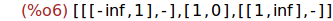
(%i7)
signosTrinomio(1,-3,2);
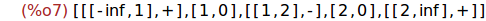
(%i8)
signosTrinomio(-1,3,-2);
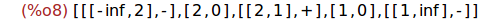
(%i9)
signosTrinomio(1,0,1);

(%i10)
signosTrinomio(-1,0,-1);

Ejercicio 2.2. Calcular la tabla de la variación de los signos del trinomio
-6x^2-3x+14/3
(%i11)
signosTrinomio(-6,-3,14/3);
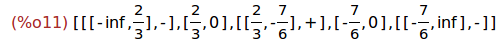
3 Ejercicio 3
Se lanza un dado cúbico equilibrado hasta que se obtiene la cara 6 por primera
vez. Se designa por X la variable aleatorio que cuenta el número de lanzamientos
efectuados. Se dice que X es el tiempo de espera del primer 6.
Ejercicio 3.1. Definir el procedimiento X() que simule una serie de lanzamientos
del dado y devuelva el número de lanzamientos realizados para obtener el 6 por
primera vez.
Solución recursiva
(%i12)
X() := Xaux(1)$
Xaux(n) := if 1+random(6)=6 then n else Xaux(n+1)$
Solución iterativa
(%i14)
X() :=
for cuenta:0 do
(if 1+random(6) = 6 then return(cuenta))$
Ejercicio 3.2. Con la ayuda del bucle for, definir el procedimiento
simulacion(n) que simule una serie de n lanzamientos y devuelva la lista
de frecuencia de los eventos [X=i] para 1 <= i <= 60. Por ejemplo,
(%i1) simulacion(1000);
(%o1) [0,145,115,104,88,61,65,53,51,50,40,28,30,29,27,13,21,18,10,6,8,4,9,3,
5,1,2,4,3,1,0,1,0,0,1,0,1,0,0,1,0,1,0,0,0,0,0,0,0,0,1,0,0,0,0,0,0,0,
0,0,0]
(%i15)
simulacion(n) := block ([i],
remarray(X),
array(X,60),
fillarray(X,makelist(0,i,1,60)),
for a:1 thru n do
(i : X(),
X[i] : X[i]+1),
listarray(X))$
(%i16)
simulacion(1000);
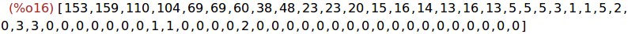
Ejercicio 3. Definir la función media tal que media(n) es el valor medio de X en
n lanzamientos. Calcular tres veces media(1000).
(%i17)
media(n) :=
(simulacion(n),
float(sum (X[i]*i,i,0,60)/n))$
(%i18)
media(100); media(100); media(100);
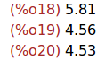
4 Ejercicio 4
La conjetura de Goldbach afirma que todo número natural par mayor que 3 se puede
escribir como la suma de dos números primos. Por ejemplo,
4 = 2 + 2, 20 = 3 + 17, 50 = 3 + 47
Ejercicio 4.1. Definir la función goldbach tal que goldbach(n) es una
descomposición de n como suma de dos números primos. Por ejemplo,
(%i1) goldbach(20);
(%o1) [3,17]
Indicación: Iterar los primos desde x=2 hasta n/1 hasta que n-x sea primo.
(%i21)
goldbach(n) := block ([x],
for x:2 next next_prime(x) thru n/2 do
if primep(n-x) then return([x,n-x]))$
Ejercicio 4.2. Descomponer 2010 como suma de dos primos.
(%i22)
goldbach(2010);
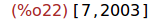
Ejercicio 4.3. Definir la función goldbachTodas tal que goldbachTodas(n) es la
lista de todas las descomposiciones de n como suma de dos números primos x e y
con x<=y. Por ejemplo,
(%i1) goldbachTodas(20);
(%o1) [[7,13],[3,17]]
(%i23)
goldbachTodas (n) := block ([todas:[]],
for x:2 thru n/2 do
if primep(x) and primep(n-x) then todas : cons([x,n-x],todas),
todas)$
(%i24)
goldbachTodas(20);
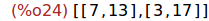
Ejercicio 4.4. Calcular el número de descomposiciones de 2010 como suma de
dos primos.
(%i25)
length(goldbachTodas(2010));
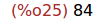